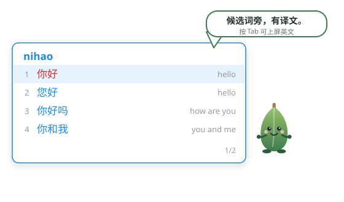

候选词旁，有译文。
竹叶输入法——Windows 上的轻量拼音输入法：全拼输入，候选行内附英文译文；按 Tab 切到译文层，直接上屏英文。默认完全离线，词库与排序全部在本机。
仅支持 Windows 10/11 x64 · 当前为内测版（v0.1.x）

已经实现的能力
以下每一项都来自测试与验收记录，见 仓库文档。
译文就在候选里
中文候选行内附英文译文，不打断输入；按 Tab 切换译文层，选中即上屏英文。
全拼与更多
全拼输入之外，支持简拼/首字母、模糊音纠错、整句候选，全部本机计算，零联网。
默认全离线
拼音、词库、排序、学习、释义默认都不联网；用户词与个人上下文只写入本地文件。
轻快
词典 mmap 只读加载、无后台常驻进程；候选刷新毫秒级（bench 实测 ≤1.7ms）。
词典包体系
基础包约 38 万词条随安装预置；it/med/slang 领域包
与网络语缩写可选启用，在线更新走签名信任链。
越用越准
词频 + 上下文 bigram 排序与用户词学习；命中率评测基准 Top1 84.7% / Top3 97.2%。
候选窗长这样
输入 nihao：第一候选「你好」右侧就是英文译文 hello。想要英文？
按 Tab 切到译文层，数字键直接上屏——不用切输入法，也不用复制去词典。
候选窗为 Win32 自绘：跟随系统深浅色、支持高像素密度（DPI）与高对比度模式。
路线图 规划中
以下条目需求已定稿、尚未实现，不与上方"已实现能力"混淆：
- 英文词典全面扩容（ECDICT 全量词库，不截断）规划中
- 网络语词典扩充（social 高频子集，与缩写注解体系配套）规划中
- 设置窗口增强闭环（检查更新、安装包管理、导入等五项）规划中
- 中英混合整句解码（如规划中
python代码整体候选） - 正式版发布与在线更新源开通流程收尾中
- 英文官网规划中